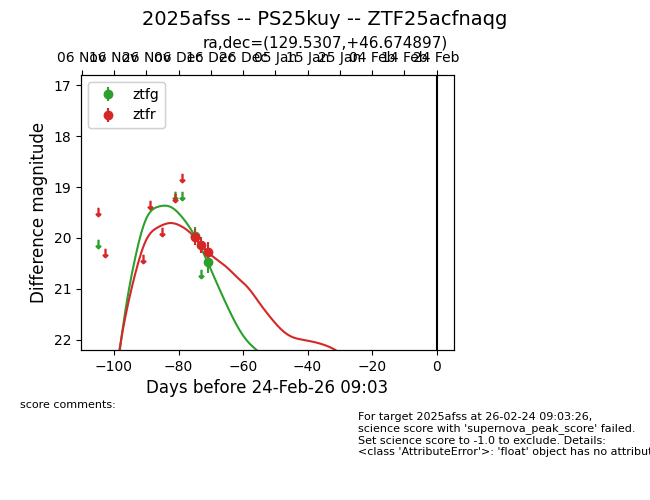
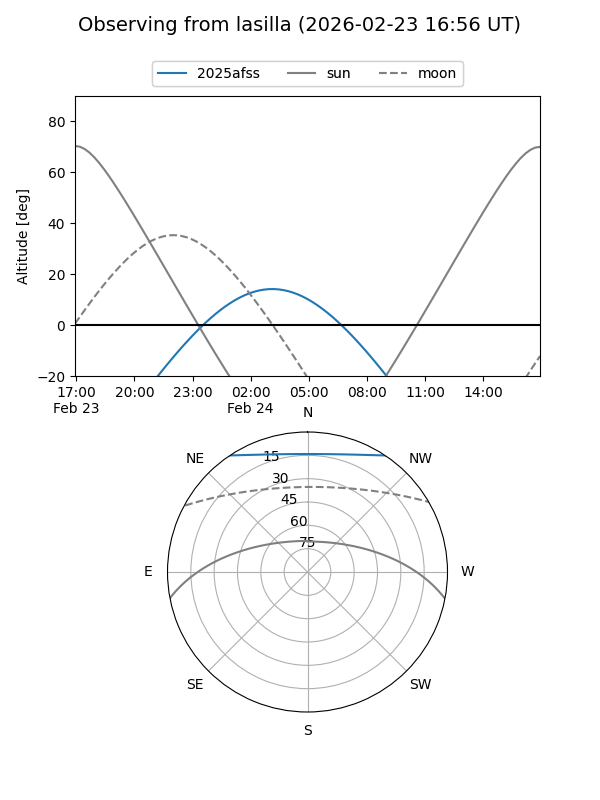
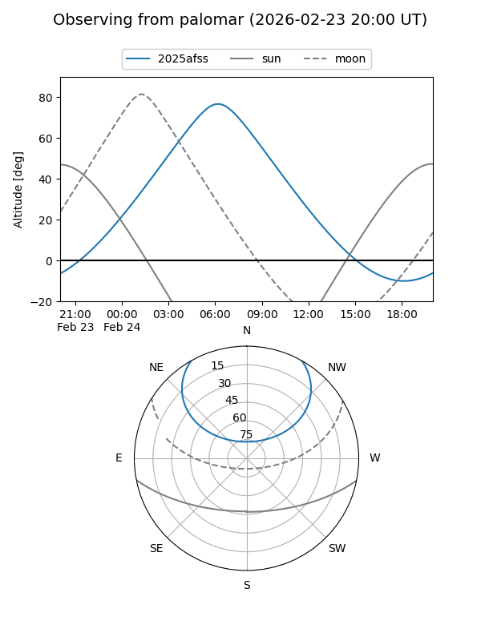

2025afss
Target 2025afss at 2025-12-30 22:09
Aliases and brokers:
FINK: fink-portal.org/ZTF25acfnaqg
Lasair: lasair-ztf.lsst.ac.uk/objects/ZTF25acfnaqg
ALeRCE: alerce.online/object/ZTF25acfnaqg
TNS: wis-tns.org/object/2025afss
YSE: ziggy.ucolick.org/yse/transient_detail/2025afss
alt names
ZTF25acfnaqg (ztf,fink_ztf)
2025afss (tns,yse)
PS25kuy (panstarrs)
Coordinates:
equatorial (ra, dec) = 129.5307,+46.67490
equatorial (HMS+DMS) = 08:38:07.37,+46:40:29.63
galactic (l, b) = (173.3442,+37.28786)
Flags:
Photometry:
last ztfg=20.48, ztfr=20.27
2 ztfg, 3 ztfr detections
Lightcurve

Visibility


Additional plots